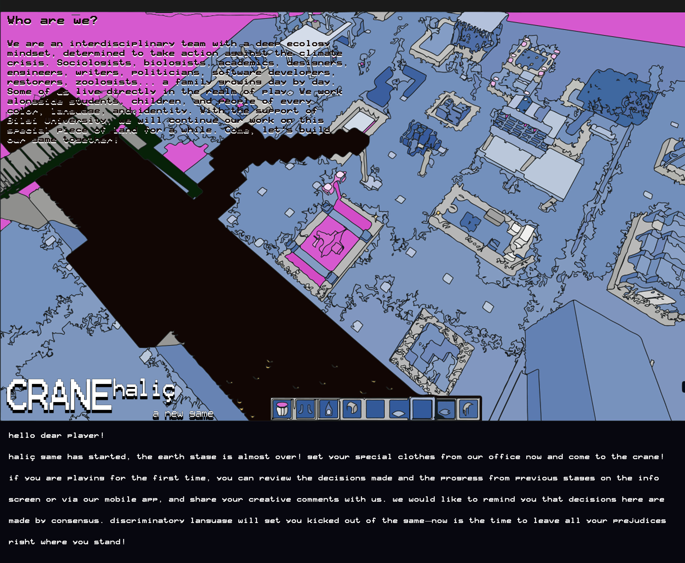
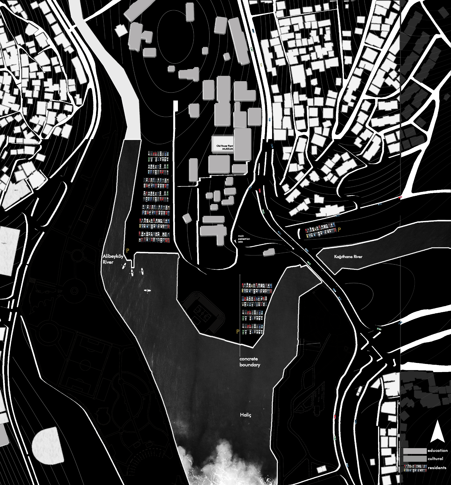
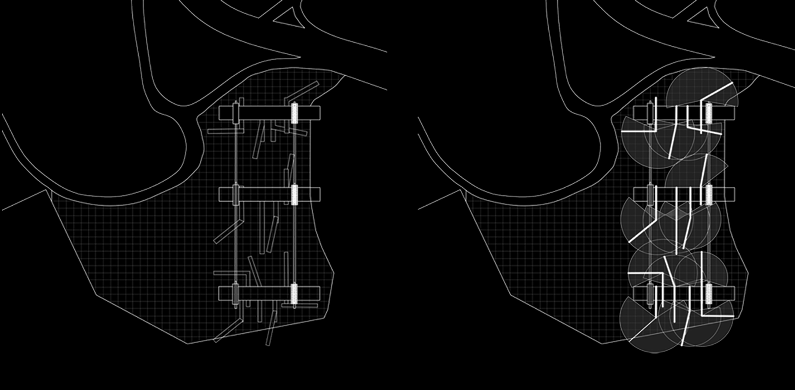
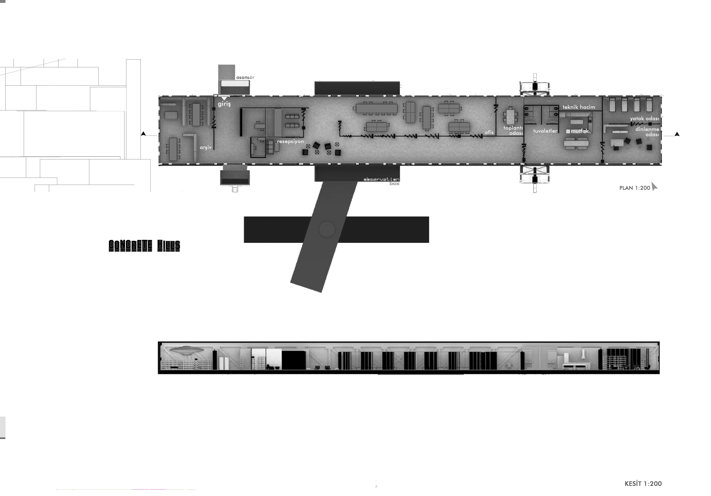
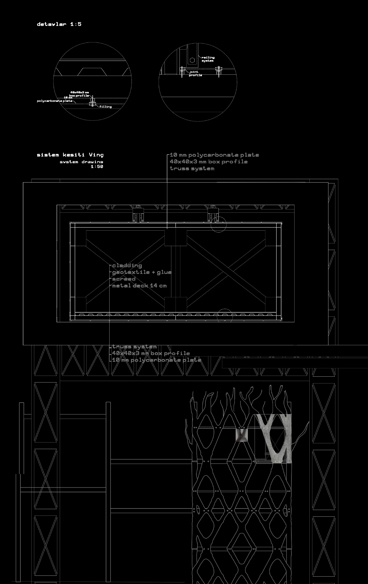

.jpg)
Silahtaraga, Istanbul, Turkey.
"Play is a voluntary activity or occupation executed within certain fixed limits of time and place, according to rules freely accepted but absolutely binding, having its aim in itself and accompanied by a feeling of tension, joy and the consciousness that it is 'different' from 'ordinary life'" Huizinga

We stand upon a piece of land located in Silahtarağa, Golden Horn (Haliç), adjacent to the Bilgi University Santral Campus. Formed by years of rich alluvial deposits from the Alibeyköy and Kağıthane streams, this soil has been entombed in concrete and alienated. Yet, it is not only the land that is alienated; the water, too, has turned away, spewing out the pollution accumulated over decades—remaining unrestored despite cleanup efforts spanning nearly forty years.
To understand this site, one must look at the history of the Golden Horn. Its story began as a tranquil seaside resort, took a sharp turn with the establishment of shipyards and its subsequent designation as an industrial zone, and eventually dissolved into rapid urbanization fueled by intense migration, erasing all traces of its serene and prestigious past. Today, following the decision to relocate the industrial area, the region finds itself in yet another period of transformation, driven by the ambition to become a "Culture Island." Its museums, private universities, adaptive-reuse industrial spaces, concrete blocks, water viewed with despair—wondering if fish will ever return—and a lost coastal culture all struggle to coexist... Walking up its steep hills toward the Metrobus tells one story; descending toward the water tells entirely another.

The primary issue identified in the Golden Horn is the restoration of "place." In the proposed project, the topic of ecology—which inherently demands a holistic perspective—is initially framed through the lens of "social fragmentation." By evaluating the rich potential of the region’s diverse demographic structure, the design focuses on the question: “How can we bring people together?” Believing that an approach fostering a sense of "togetherness" will directly contribute to the ecological restoration process, the project emphasizes awareness, learning, and production.

The secondary issue is the restoration of the soil, alongside the vital need to re-establish physical contact with the water. Rooted in the fact that trees are among the most effective solutions to the climate crisis, the ultimate goal of the proposed structural framework and design is to create a living system that ultimately leaves behind a "play forest."
Reaching and reuniting the increasingly fragmented and polarized segments of society could only be achieved by stepping away from ordinary reality into another context. As Johan Huizinga noted: "Play is a voluntary activity or occupation executed within certain fixed limits of time and place, according to rules freely accepted but absolutely binding, having its aim in itself and accompanied by a feeling of tension, joy and the consciousness that it is 'different' from 'ordinary life'."


.jpg)
.jpg)